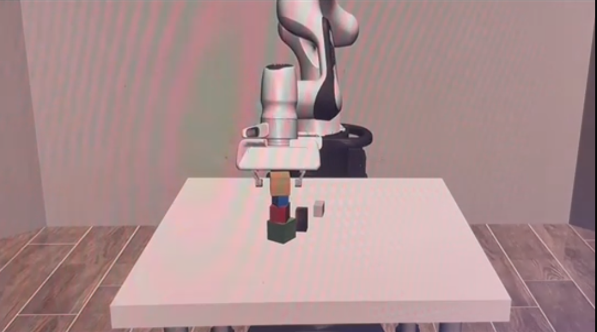
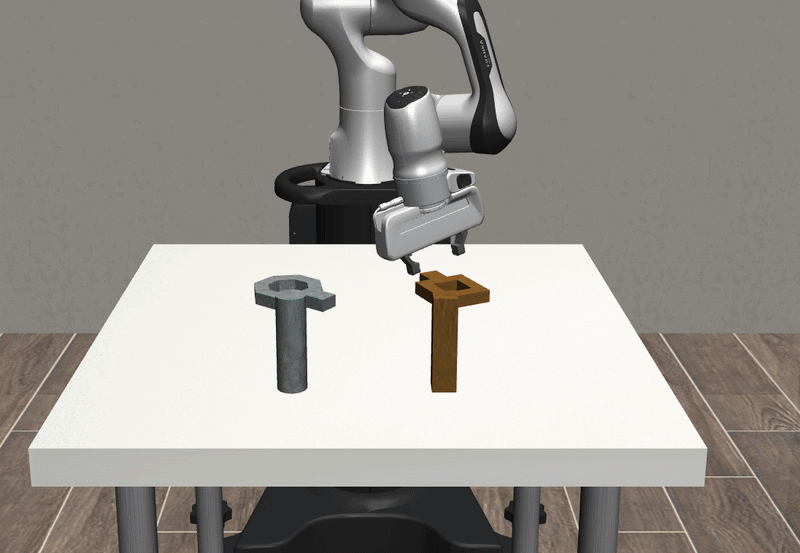

A voice-driven teleoperation system that lets users control a simulated Panda robot arm through natural speech commands, powered by offline speech recognition and real-time physics simulation.
We have two main environments:
Each environment supports three main motion types:
This project is a fully voice-controlled robot manipulation system built on top of Robosuite and MuJoCo. Instead of using a keyboard, mouse, or gamepad, the user speaks commands into a microphone and the robot responds in real time inside a physics simulation.
The system supports three distinct modes of operation: an autonomous block-stacking sequence, a voice-gated grab-hover-place pipeline where the user guides the robot through each phase, and an incremental teleoperation mode where spoken directional commands jog the end-effector in small steps.


The pipeline connects a microphone to a robot through four stages: audio capture, speech recognition, command dispatch, and physics-based control.
Audio is captured through SoundDevice, resampled from the device's native sample rate to 16 kHz using SciPy's polyphase resampling, then fed into a Vosk recognizer configured with a restricted grammar of command keywords. This grammar constraint dramatically improves recognition accuracy by limiting the search space to only valid commands.
Recognized keywords are dispatched to the appropriate policy. Each policy computes 7-dimensional actions: three delta-position components, three axis-angle rotation components, and a gripper command. A PID controller (Kp=10, Ki=0.1, Kd=5) converts target positions into smooth delta commands that the Robosuite environment executes at 20 Hz.
Say "stack" and the robot autonomously executes a full pick-and-place sequence: hover above cube A, descend and grasp, lift to cube B, and place. Four phases driven by waypoint targets and PID control.
A voice-gated pipeline triggered by "grab". The robot grabs the object and waits. Say "hover" to move above the target, then "place" to set it down. Each phase requires explicit confirmation.
Fine-grained voice jogging. Commands like "up", "left", "forward", "open", and "close" each move the end-effector a small, fixed increment. Designed around the latency constraints of real-time speech recognition.
The system recognizes a focused set of keywords, using Vosk's grammar constraints to maximize accuracy.
Robosuite provides high-fidelity robot manipulation environments on top of the MuJoCo physics engine, with built-in tasks like block stacking and nut assembly.
Vosk runs a Kaldi-based speech recognition model entirely offline. Audio from SoundDevice is resampled to 16 kHz and processed with a grammar-restricted recognizer for fast, accurate keyword detection.
A tuned PID controller converts waypoint targets into smooth delta-position commands. Quaternion and rotation utilities from SciPy handle orientation math.
The entire system is written in Python, leveraging NumPy for numerical operations and SciPy for signal processing and spatial transforms.
Building a real-time voice-controlled robot system introduced several non-obvious engineering challenges that shaped our final design.
Getting a speech recognition model to reliably convert spoken commands into text was one of the hardest parts of the project. General-purpose ASR models would frequently misinterpret short, single-word commands like "up" or "back", confusing them with similar-sounding words or background noise. We experimented with multiple models and configurations before settling on Vosk with a tightly constrained grammar. By restricting the recognizer's vocabulary to only our valid command keywords, we dramatically reduced misrecognition. Even so, tuning the audio pipeline — getting the right sample rate, buffer size, and noise handling — took significant iteration.
Even after achieving acceptable accuracy, the latency of the speech-to-text pipeline was a major constraint. From the moment a user finishes speaking a command to when the recognized keyword is available to the control system, there is a noticeable delay. This delay comes from audio buffering, the recognition computation itself, and the inherent lag in detecting end-of-speech. For a robot control application, this latency made continuous, real-time motion impractical — by the time the system processed one command, the robot had already moved past where the user intended.
We wanted the entire system to run locally without depending on cloud APIs, both for lower latency and to avoid network dependencies. Getting a speech recognition model to run efficiently on a local machine, while simultaneously running a physics simulation, was a real challenge. Cloud-based ASR services offered better accuracy but introduced unacceptable round-trip latency. Vosk's small English model struck the right balance: it runs locally with minimal resource usage while providing adequate accuracy for our constrained keyword vocabulary.
The combination of recognition latency and accuracy constraints led us to a key design decision: each voice command moves the robot only a small, fixed increment rather than initiating continuous motion. In the incremental teleop mode, saying "up" moves the end-effector a short burst (~26 simulation steps) in the +Z direction and then stops. This discrete approach has several advantages: it's forgiving of latency since overshoot is bounded, it doesn't require a "stop" command to halt motion, and it naturally maps to the cadence of spoken commands. The user speaks, the robot nudges, and the user can observe and correct — a much more reliable feedback loop than trying to stream continuous commands through a high-latency voice pipeline.
Screenshots, recordings, and diagrams from development and testing.